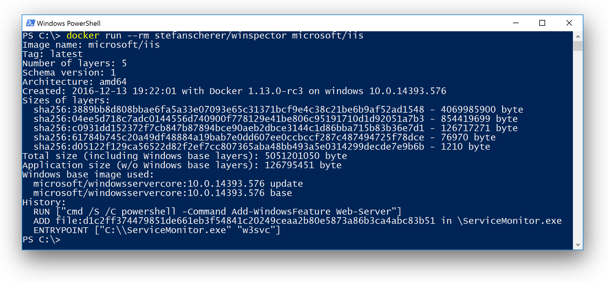
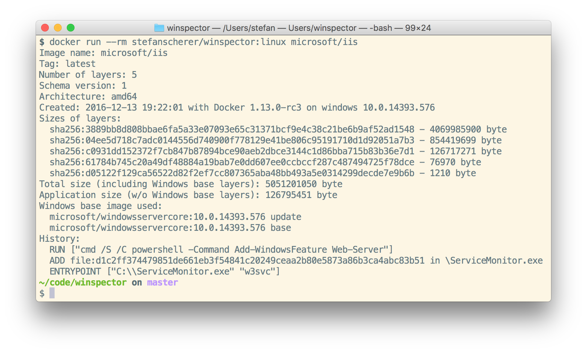

In my previous blog post I showed you how to get Windows Updates into your container images. But how do you know if your underlying Docker image you use in the FROM line of your Dockerfile also uses the correct version of the Windows base image?
Is there a way to look into container images without downloading them?
There are several services like imagelayers.io, microbadger, shields.io and others which provide badges and online views for existing Docker images at Docker Hub. Unfortunately not all support Windows images at the moment.
Enter winspector
I found an inspector tool written in Python that might be useful for that task. I've enhanced it and created a tool called winspector which is available as Docker image stefanscherer/winspector for Windows and Linux. With this tool you can inspect any Windows Docker images on the Docker Hub.
Winspector will show you
- The creation date of the image and the Docker version and Windows version used at build time.
- The number of layers down to the Windows base image
- Which Windows base image the given image depends on. So you know whether a random Windows image uses the up to date Windows base image or not.
- The size of each layer. This is useful to when you try to optimize your image size.
- The "application size" without the Windows base layers. So you get an idea how small your Windows application image really is and what other users have to download provided that they already have the base image.
- The history of the image. It tries to reconstruct the
Dockerfilecommands that have been used to build the image.
Run it from Windows
If you have Docker running with Windows containers, use this command to run the tool with any given image name and an optional tag.
docker run --rm stefanscherer/winspector microsoft/iis

At the moment the Docker image depends on the windowsservercore base image. I'll try to move it to nanoserver to reduce download size for Windows 10 users.
Run it from Mac / Linux
If you have a Linux Docker engine running, just use the exact same command as on Windows. The Docker image stefanscherer/winspector is a multiarch Docker image and Docker will pull the correct OS specific image for you automatically.
docker run --rm stefanscherer/winspector microsoft/iis

Inspecting some images
Now let's try winspector and inspect a random Docker image. We could start with the Windows base image itself.
$ docker run --rm stefanscherer/winspector microsoft/windowsservercore
Even for this image it can show you some details:
Image name: microsoft/windowsservercore
Tag: latest
Number of layers: 2
Sizes of layers:
sha256:3889bb8d808bbae6fa5a33e07... - 4069985900 byte
sha256:3430754e4d171ead00cf67667... - 913145061 byte
Total size (including Windows base layers): 4983130961 byte
Application size (w/o Windows base layers): 0 byte
Windows base image used:
microsoft/windowsservercore:10.0.14393.447 full
microsoft/windowsservercore:10.0.14393.693 update
As you can see the latest windowsservercore image has two layers. The sizes shown here are the download sizes of the compressed layers. The smaller one is the layer that will be replaced by a newer update layer with the next release.
How big is the winspector image?
Now let's have a look at the winspector Windows image to see what winspector can retrieve for you.
$ docker run --rm stefanscherer/winspector stefanscherer/winspector:windows-1.4.3
The (shortened) output looks like this:
Image name: stefanscherer/winspector
Tag: windows-1.4.3
Number of layers: 14
Schema version: 1
Architecture: amd64
Created: 2017-01-15 21:35:22 with Docker 1.13.0-rc7 on windows 10.0.14393.693
Sizes of layers:
...
Total size (including Windows base layers): 360497565 byte
Application size (w/o Windows base layers): 27188879 byte
Windows base image used:
microsoft/nanoserver:10.0.14393.447 full
microsoft/nanoserver:10.0.14393.693 update
History:
...
So the winspector Windows image is about 27 MByte and it uses the latest nanoserver base image.
Inspecting Linux images
And winspector is not restricted to Windows images, you can inspect Linux images as well.
If you run
$ docker run --rm stefanscherer/winspector stefanscherer/winspector:linux-1.4.3
then winspector will show you
Image name: stefanscherer/winspector
Tag: linux-1.4.3
Number of layers: 8
Schema version: 1
Architecture: amd64
Created: 2017-01-15 21:34:21 with Docker 1.12.3 on linux
Sizes of layers:
...
Total size (including Windows base layers): 32708231 byte
Application size (w/o Windows base layers): 32708231 byte
Windows base image used:
It does not seem to be a Windows image
History:
...
As you can see the Linux image is about 32 MByte.
So once you have downloaded the latest Windows base images like windowsservercore or nanoserver the download experience is the same for both platforms.
Conclusion
With winspector you can check any Windows container image on the Docker Hub which version of Windows it uses.
You can also see how big each image layer is and learn how to optimize commands in your Dockerfile to create smaller Windows images.
The tool is open source on GitHub at github.com/StefanScherer/winspector. It is community driven, so feel free to send me feedback in form of issues or pull requests.
As always, please leave a comment if you have questions or improvements or want to share your thoughts. You can follow me on Twitter @stefscherer.